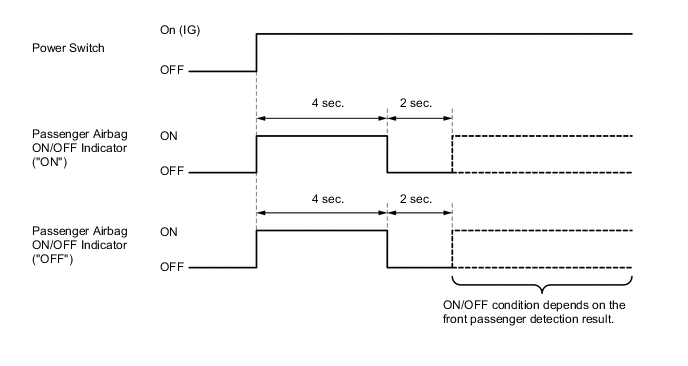

CHECK DLC3
Check the DLC3.
FUNCTION OF PASSENGER AIRBAG ON/OFF INDICATOR
Initial check
Turn the power switch on (IG).
The passenger airbag ON/OFF indicator comes on for approximately 4 seconds, then goes off for approximately 2 seconds.
Approximately 6 seconds after the power switch is turned on (IG), the passenger airbag ON/OFF indicator will indicate ON/OFF depending on the following conditions.
| Front Passenger Seat Condition | Passenger Airbag ON/OFF Indicator | SRS Warning Light | |
|---|---|---|---|
| ON Indicator | OFF Indicator | ||
| Vacant | OFF | ON | OFF |
| Adult*1 is seated | ON | OFF | OFF |
| Child*2 is seated | ON or OFF*2 | OFF or ON*2 | OFF |
| Child restraint system is installed | OFF | ON | OFF |
| Occupant classification system failure | OFF | ON | ON |
*1: The system judges a person of average adult weight or more as an adult. If a smaller adult sits in the front passenger seat, the system may not recognize them as an adult depending on their physique and posture.
*2: The system may not recognize a child or a child in a child restrain system as a child depending on factors such as the positioning of the child restraint system or the child's physique or posture.
Tech Tips
The passenger airbag ON/OFF indicator illuminates based on the following timing chart in order to check the indicator light circuit.
When the occupant classification system has a malfunction, both the SRS warning light and passenger airbag ON/OFF indicator ("OFF") come on. In this case, check for airbag system DTCs first.

PASSENGER AIRBAG ON/OFF INDICATOR CHECK
Turn the power switch on (IG).
Check that the passenger airbag ON/OFF indicator ("ON" and "OFF") comes on for approximately 4 seconds, then goes off for approximately 2 seconds.
Tech Tips
Refer to the indicator operation table in Function of Passenger Airbag ON/OFF Indicator for the passenger airbag ON/OFF indicator operation when the power switch is turned on (IG) and approximately 6 seconds elapse.